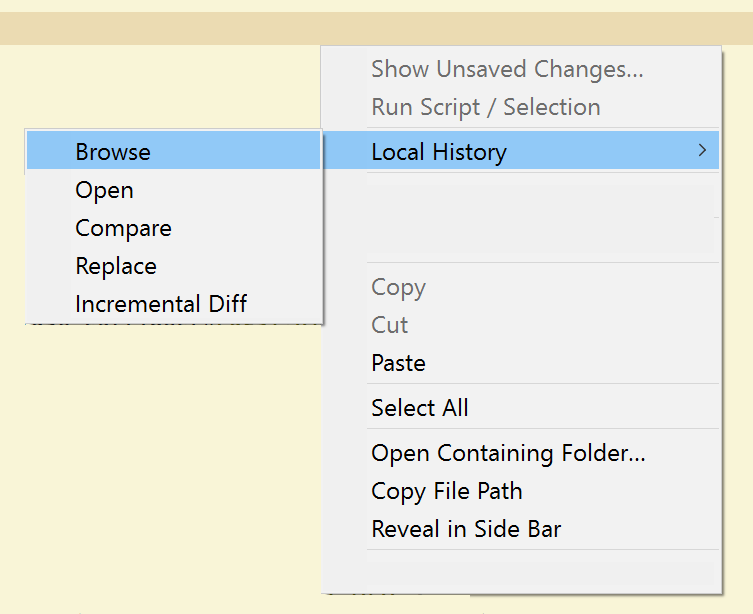
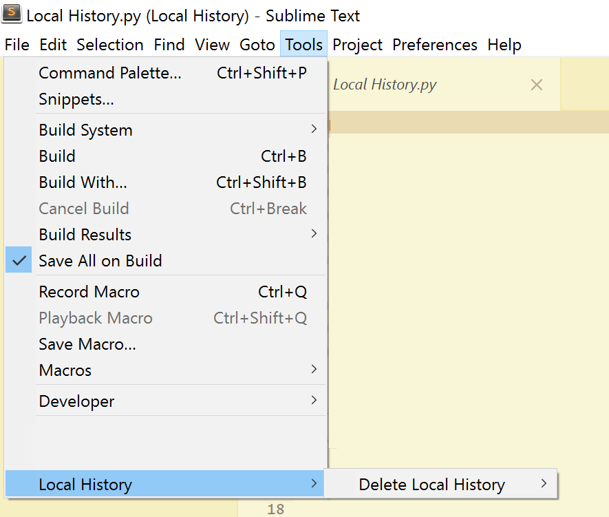

Local History


A Sublime Text package for maintaining a local history of files.
Benefits
- Every time you modify a file, a copy of the old contents is kept in the local history when you:
- open the file.
- close the file.
- and/or loose focus.
- Available functions are:
- file comparison of the open file and any of its older versions from the history.
- incremental diff view.
- Functions are available via:
- the right-click context menu.
- the
Local History: ...commands from the command palette.
-
Local Historyhelps you out when you change or delete a file by accident. -
Local Historycan help you out when your workspace has a catastrophic problem or if you get disk errors that corrupt your workspace files. - Each file revision is stored in a separate file (with full path):
- inside the
~/.sublime/Local History/folder of your home directory ("portable": false) - inside the
Sublime Text/Data/.sublime/Local History/folder of your Sublime Text installation ("portable": true)
- inside the
Installation
- Via Package Control:
- Install Package Control
- Open the command palette (Ctrl⇧ ShiftP)
- Choose
Install Package - Search for
Local Historyand select to install.
- Clone the repo:
git clone git://github.com/vishr/local-history.git "Local History"into your Sublime Text Packages directory.- via HTTPS:
https://github.com/vishr/local-history.git - via SSH:
git@github.com:vishr/local-history.git
- via HTTPS:
- Download an archive file below, unpack it and then re-zip the contents of the
Local Historysubdirectory. RenameLocal History.ziptoLocal History.sublime-packageand move it to yourInstalled Packagessubdirectory of your Sublime Text installation:- current snapshot of master
Usage

- Functions are available via:
- the right-click context menu.
- the
Local History: ...commands from the command palette.

- To permanently delete all history files, choose
Tools > Local History > Delete Local History > Permanently delete all
Settings
"history_retention": 0, // number of days to keep files, 0 to disable deletion
"format_timestamp": "%Y%m%d%H%M%S", // file_name-XXXXXXXX.file_extension
"history_on_close": true,
"history_on_focus_lost": false,
"history_on_load": true,
"portable": true, // save to 'Sublime Text/Data/.sublime/Local History/...' instead of '~/.sublime/Local History/...'
"file_size_limit": 4194304 // 4 MB